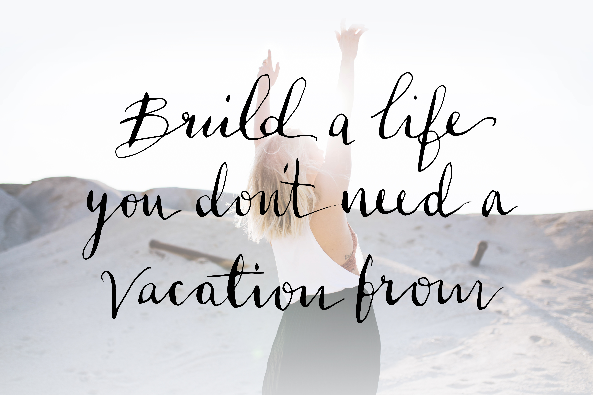

How did I get here? From HR (People) Professional to Career and Wellness Coach
Skimming past school – university - a masters etc, I have spent the best part of ten years working in HR when I was introduced to coaching. Fast-forward another year and I qualified with two diplomas: Personal Performance Coaching,
and Corporate and Executive Coaching.
Having worked in HR across the creative sector, with a focus on L&D and wellbeing, I have knowledge and experience in these areas, and more importantly, I feel passionate about
them! Coaching is the way that I can use my passion and invest it into a role where I can help others find what they love to do too.
Still reading? A few more things that you might find interesting about me..
PRAISE
